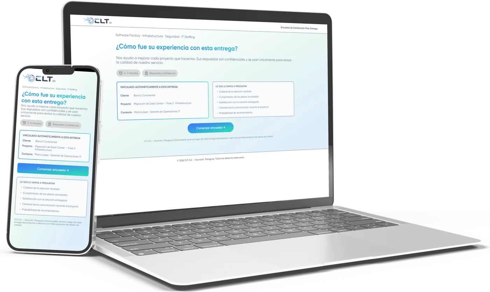

Satisfaction Form
About the project
This is the survey that CLT's clients receive after each delivery. It shows the client, project and contact details, and asks four questions on a 1 to 5 scale: service, deadlines, solution and communication. Then come a recommendation question (NPS) and a space for comments. It is designed for mobile and web.

Mobile screens


1 / 5
Web screens


1 / 5
My contribution
- Defined, together with the sales team, what to measure on each delivery: service, deadlines, solution, communication and NPS.
- Design of the step-by-step flow with a progress bar, so it can be completed in 2 or 3 minutes.
- Defined the client, project and contact data that the form receives already filled in from the delivery.
- Mobile and web design with custom components and CLT's visual identity.
- Writing of the copy for each screen (questions, scales, closing message).
- Built the design with prompts in Claude, plus manual refinements for a more polished finish.